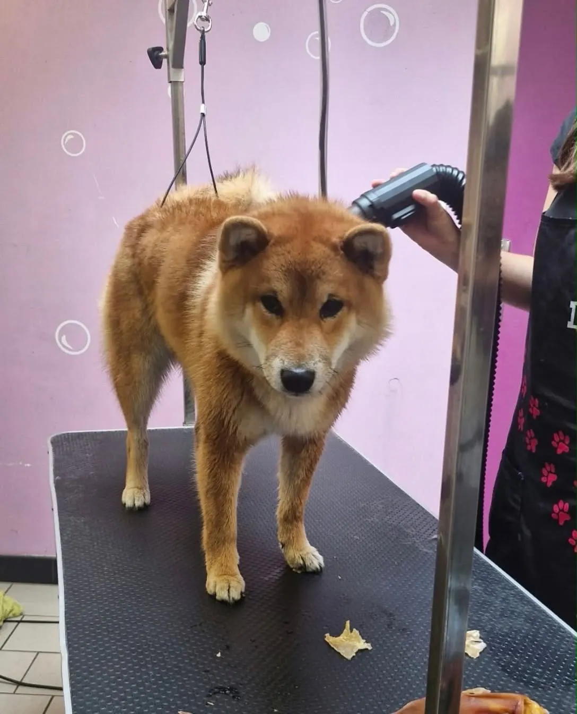
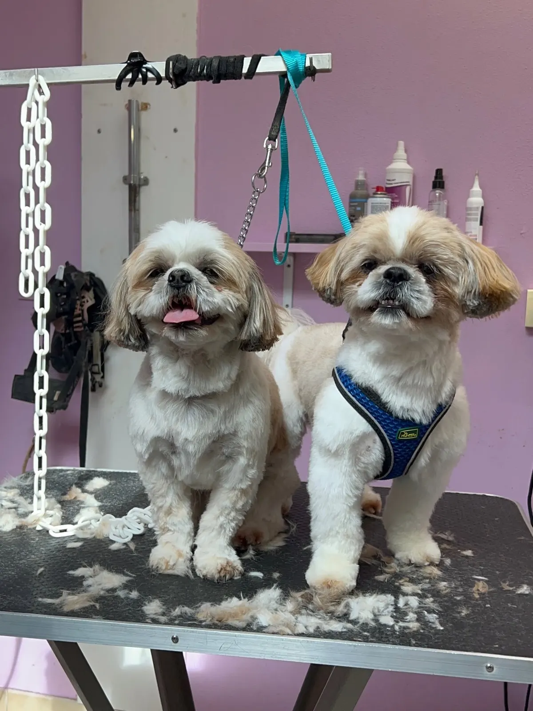
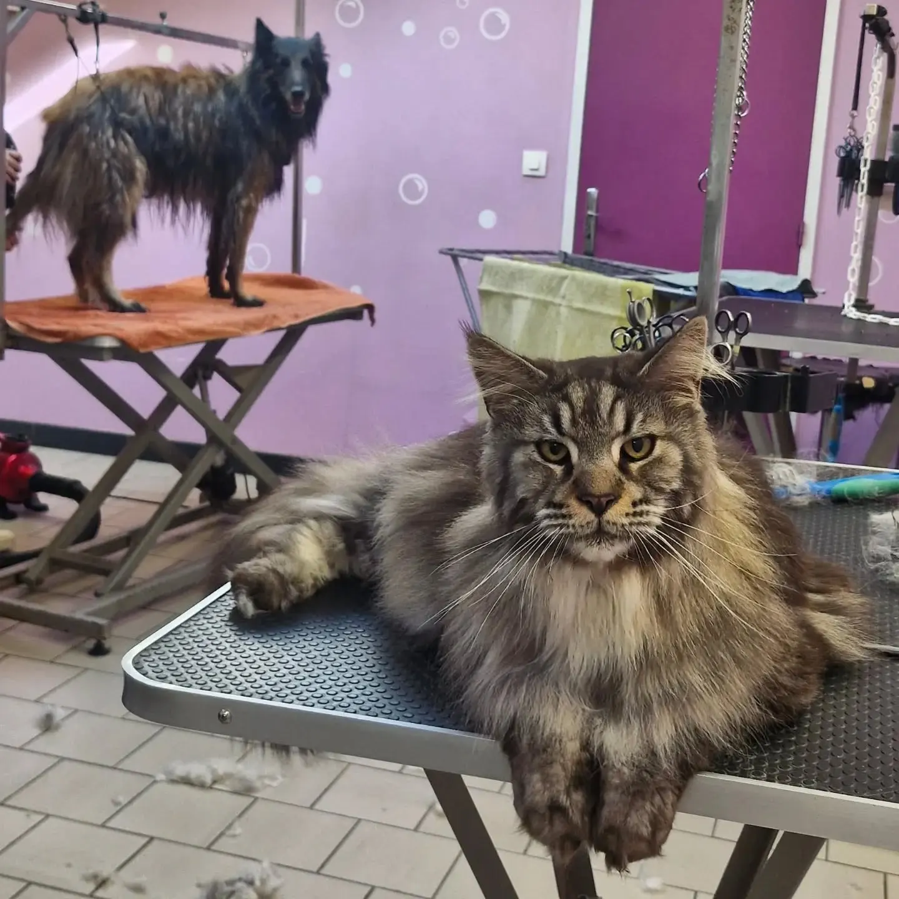
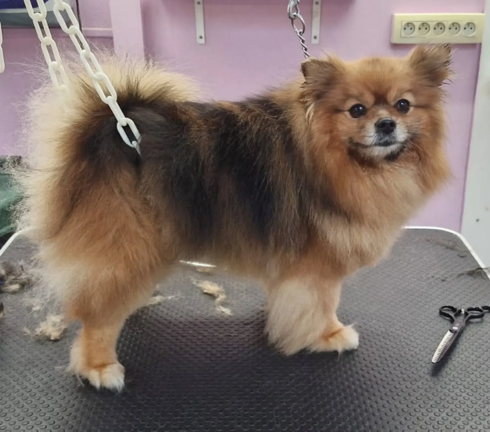
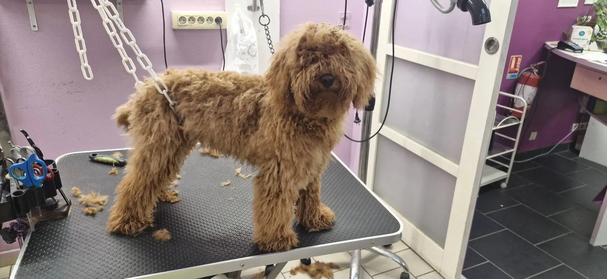
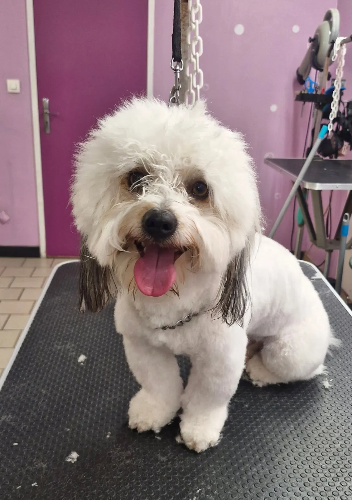
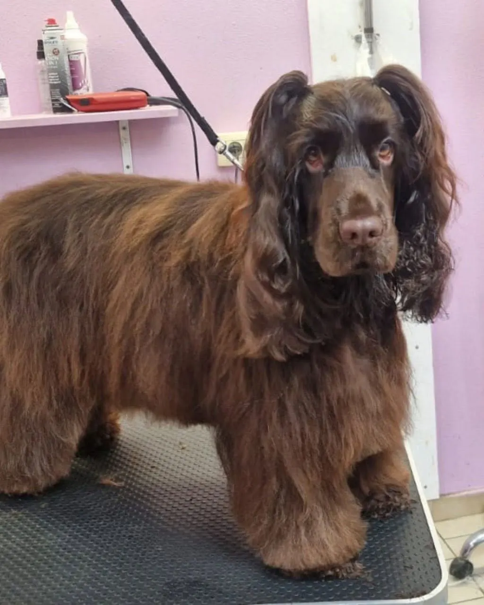
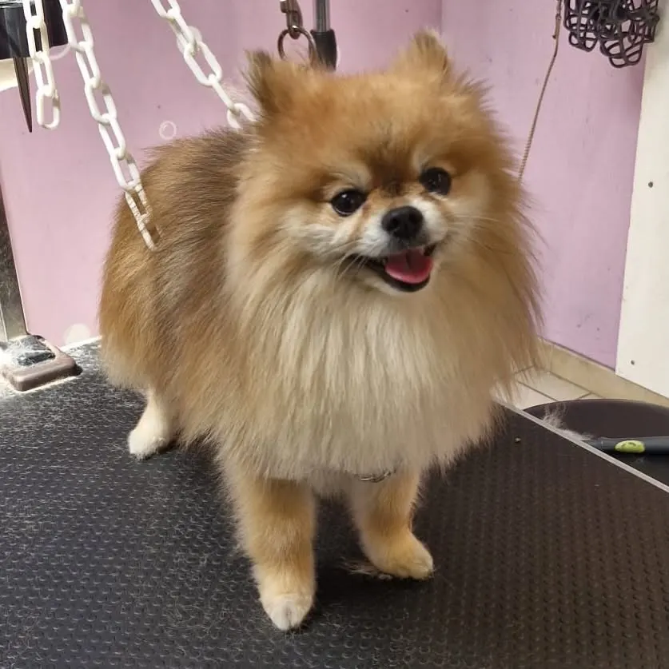
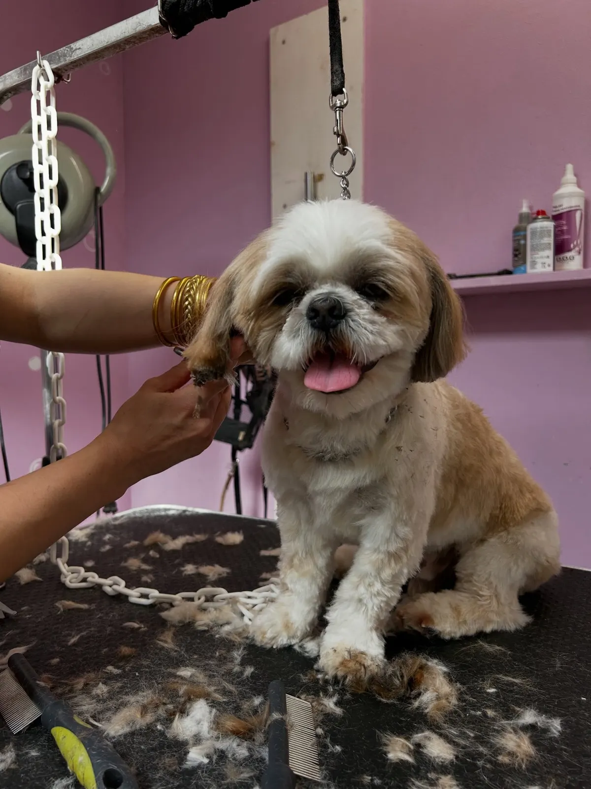
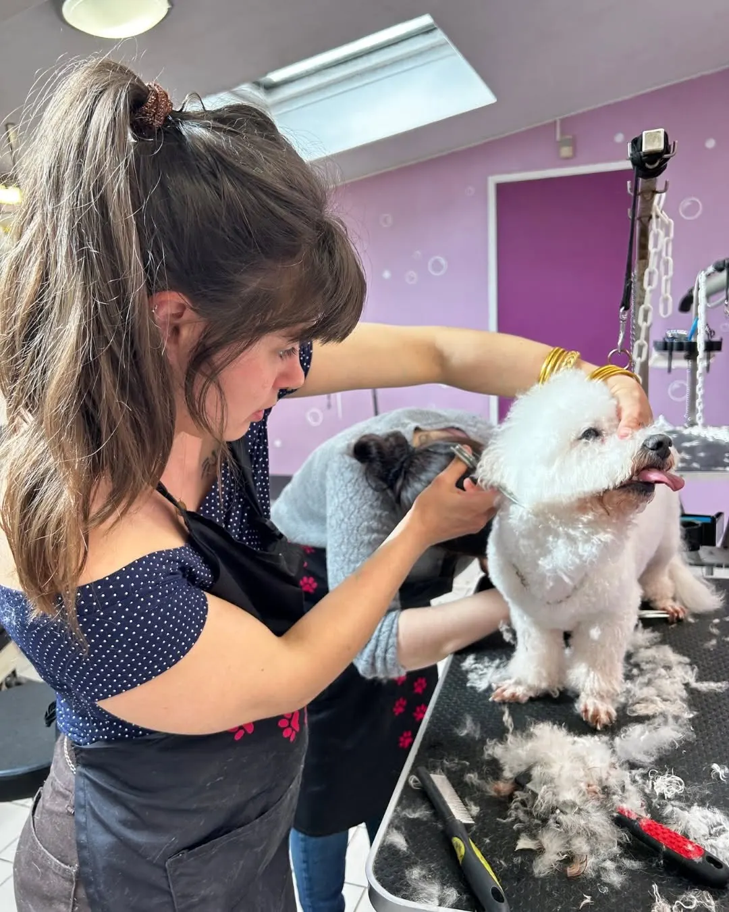

Le premier toilettage
Pour Baiku, chiot shiba inu, il a fallu du temps, du calme et des associations positives pour découvrir les bruits, le bain et les brosses. Aucune contrainte : on avance au rythme du chiot.

Depuis 2012, avenue Pasteur à Angers, le salon accueille les chats et tous les chiens, du chiot à son premier toilettage jusqu'aux grands chiens de 120 kg. Coupe aux ciseaux, débourrage, soins bien-être : on s'adapte à l'animal.
Ce n'est pas parce qu'une race ne figure pas sur la liste des tarifs qu'elle n'est pas accueillie : le salon est équipé pour recevoir tout le monde.
Selon vos envies et surtout selon les besoins réels de votre compagnon.
Comme ce spitz roux, tout juste débourré, ciseaux encore posés sur la table.
Un moment de douceur, à son rythme, avec des pauses quand il faut.
Le salon toilette aussi les chats, comme ce maine coon.


« L'esprit du salon : transformer le premier rendez-vous en un moment de confiance pour toute sa vie. »Com' Chiens et Chats, octobre 2026

Pour Baiku, chiot shiba inu, il a fallu du temps, du calme et des associations positives pour découvrir les bruits, le bain et les brosses. Aucune contrainte : on avance au rythme du chiot.
Quand le papi schnauzer a besoin de souffler, on pose la brosse et on fait une pause câlin. S'il préfère rester assis ou s'allonger sur le côté, on le toilette dans cette position.
Le salon est équipé pour recevoir absolument tout le monde, y compris les grands chiens jusqu'à 120 kg.
Les tables, les chaînes, les murs roses et violets : c'est ici que chiens et chats repartent légers et tout beaux.

Un caniche abricot, vue sur le salon



Appelez le salon pour fixer un rendez-vous, ou écrivez-nous.
